특수용접기능사 (2016-04-02 기출문제)
1과목: 용접일반
1. 용접봉의 습기가 원인이 되어 발생하는 결함으로 가장 적절한 것은?
- 기공
- 선상조직
- 용입불량
- 슬래그 섞임
(정답률: 82%)

2. 은납땜이나 황동납땜에 사용되는 용제(Flux)는?
- 붕사
- 송진
- 염산
- 염화암모늄
(정답률: 82%)
3. 다음 금속 중 냉각속도가 가장 빠른 금속은?
- 구리
- 연강
- 알루미늄
- 스테인레스강
(정답률: 72%)
4. 아크용접기의 사용에 대한 설명으로 틀린 것은?
- 사용률을 초과하여 사용하지 않는다.
- 무부하 전압이 높은 용접기를 사용한다.
- 전격방지기가 부착된 용접기를 사용한다.
- 용접기 케이스는 접지(earth)를 확실히 해둔다.
(정답률: 90%)
5. 서브머지드 아크 용접에서 와이어 돌출 길이는 보통 와이어 지름을 기준으로 정한다. 적당한 와이어 돌출길이는 와이어 지름의 몇 배가 가장 적합한가?
- 2배
- 4배
- 6배
- 8배
(정답률: 49%)
6. 다음 중 지그나 고정구의 설계 시 유의사항으로 틀린 것은?
- 구조가 간단하고 효과적인 결과를 가져와야 한다.
- 부품의 고정과 이완은 신속히 이루어져야 한다.
- 모든 부품의 조립은 어렵고 눈으로 볼 수 없어야 한다.
- 한번 부품을 고정시키면 차후 수정 없이 정화하게 고정되어 있어야 한다.
(정답률: 93%)
7. 다음 중 일반적으로 모재의 용융선 근처의 열영향부에서 발생되는 균열이며 고탄소강이나 저합금강을 용접할 때 용접열에 의한 열영향부의 경화와 변태응력 및 용착금속 속의 확산성 수소에 의해 발생되는 균열은?
- 루트 균열
- 설퍼 균열
- 비드 밑 균열
- 크레이터 균열
(정답률: 59%)
8. 플라즈마 아크 용접의 특징으로 틀린 것은?
- 비드 폭이 좁고 용접속도가 빠르다.
- 1층으로 용접할 수 있으므로 능률적이다.
- 용접부의 기계적 성질이 좋으며 용접변형이 작다.
- 핀치효과에 의해 전류밀도가 작고 용입이 얕다.
(정답률: 75%)
9. 가스 용접 시 안전사항으로 적당하지 않는 것은?
- 호스는 길지 않게 하며 용접이 끝났을 때는 용기밸브를 잠근다.
- 작업자 눈을 보호하기 위해 적당한 차광유리를 사용한다.
- 산소병은 60℃이상 온도에서 보관하고 직사광선을 피하여 보관한다.
- 호스 접속부는 호스밴드로 조이고 비눗물 등으로 누설여부를 검사한다.
(정답률: 89%)
10. 다음 중 연소의 3요소에 해당하지 않는 것은?
- 가연물
- 부촉매
- 산소공급원
- 점화원
(정답률: 81%)
11. 다음 중 불활성 가스인 것은?
- 산소
- 헬륨
- 탄소
- 이산화탄소
(정답률: 71%)
12. 다음 중 유도방식에 의한 광의 증폭을 이용하여 용융하는 용접법은?
- 맥동 용접
- 스터드 용접
- 레이저 용접
- 피복 아크 용접
(정답률: 77%)
13. 저항 용접의 특징으로 틀린 것은?
- 산화 및 변질부분이 적다.
- 용접봉, 용제 등이 불필요하다.
- 작업속도가 빠르고 대량생산에 적합하다.
- 열손실이 많고, 용접후에 집중열을 가할 수 없다.
(정답률: 72%)
14. 제품을 용접한 후 일부분에 언더컷이 발생하였을 때 보수 방법으로 가장 적당한 것은?
- 홈을 만들어 용접한다.
- 결함부분을 절단하고 재 용접한다.
- 가는 용접봉을 사용하여 재 용접한다.
- 용접부 전체부분을 가우징으로 따낸 후 재 용접한다.
(정답률: 78%)
15. 서브머지드 아크 용접법에서 두 전극사이의 복사열에 의한 용접은?
- 텐덤식
- 횡 직렬식
- 횡 병렬식
- 종 병렬식
(정답률: 54%)
16. 다음 중 TIG 용접 시 주로 사용되는 가스는?
- CO2
- H2
- O2
- Ar
(정답률: 86%)
17. 심용접의 종류가 아닌 것은?
- 횡 심 용접(circular seam welding)
- 매시 심 용접(mash seam welding)
- 포일 심 용접(foil seam welding)
- 맞대기 심 용접(butt seam welding)
(정답률: 60%)
18. 용접 순서에 관한 설명으로 틀린 것은?
- 중심선에 대하여 대칭으로 용접한다.
- 수축이 적은 이음을 먼저하고 수축이 큰 이음은 후에 용접한다.
- 용접선의 직각 단면 중심축에 대하여 용접의 수축력의 합이 0이 되도록 한다.
- 동일 평면 내에 많은 이음이 있을 때는 수축은 가능한 자유단으로 보낸다.
(정답률: 84%)
19. 맞대기 용접이음에서 판 두께가 6㎜, 용접선 길이가 120㎜, 인장응력이 9.5 N/mm2 일 때 모재가 받는 하중은 몇 N 인가?
- 5680
- 5860
- 6480
- 6840
(정답률: 65%)
20. 다음 중 인장시험에서 알 수 없는 것은?
- 항복점
- 연신율
- 비틀림강도
- 단면수축률
(정답률: 64%)
21. 다음 용접 결함 중 구조상의 결함이 아닌 것은?
- 기공
- 변형
- 용입 불량
- 슬래그 섞임
(정답률: 79%)
22. 다음 중 일렉트로 가스 아크 용접의 특징으로 옳은 것은?
- 용접속도는 자동으로 조절된다.
- 판 두께가 얇을수록 경제적이다.
- 용접장치가 복잡하여, 취급이 어렵고 고도의 숙련을 요한다.
- 스패터 및 가스의 발생이 적고, 용접 작업 시 바람의 영향을 받지 않는다.
(정답률: 49%)
23. 피복 아크 용접에서 아크의 특성 중 정극성에 비교하여 역극성의 특징으로 틀린 것은?
- 용입이 얕다.
- 비드 폭이 좁다.
- 용접봉의 용융이 빠르다.
- 박판, 주철 등 비철금속의 용접에 쓰인다.
(정답률: 67%)
24. 가스 용접봉 선택조건으로 틀린 것은?
- 모재와 같은 재질일 것
- 용융 온도가 모재보다 낮을 것
- 불순물이 포함되어 있지 않을 것
- 기계적 성질에 나쁜 영향을 주지 않을 것
(정답률: 76%)
25. 아크 용접에 속하지 않는 것은?
- 스터드 용접
- 프로젝션 용접
- 불활성가스 아크 용접
- 서브 머지드 아크 용접
(정답률: 73%)
26. 아세틸렌(C2H2) 가스의 성질로 틀린 것은?
- 비중이 1,906으로 공기보다 무겁다.
- 순수한 것은 무색, 무취의 기체이다.
- 구리, 은, 수은과 접촉하면 폭발성 화합물을 만든다.
- 매우 불안전한 기체이므로 공기 중에서 폭발 위험성이 크다.
(정답률: 67%)
27. 용접용 2차측 케이블의 유연성을 확보하기 위하여 주로 사용하는 캡 타이어 전선에 대한 설명으로 옳은 것은?
- 가는 구리선을 여러 개로 꼬아 얇은 종이로 싸고 그 위에 니켈 피폭을 한 것
- 가는 구리선을 여러 개로 꼬아 튼튼한 종이로 싸고 그 위에 고무 피복을 한 것
- 가는 알루미늄선을 여러 개로 꼬아 튼튼한 종이로 싸고 그 위에 니켈 피복을 한 것
- 가는 알루미늄선을 여러 개로 꼬아 얇은 종이로 싸고 그 위에 고무 피복을 한 것
(정답률: 78%)
28. 산소 용기를 취급할 때 주의사항으로 가장 적합한 것은?
- 산소밸브의 개폐는 빨리해야 한다.
- 운반 중에 충격을 주지 말아야 한다.
- 직사광선이 쬐이는 곳에 두어야 한다.
- 산소 용기의 누설시험에는 순수한 물을 사용해야 한다.
(정답률: 78%)
29. 프로판 가스의 성질에 대한 설명으로 틀린 것은?
- 기화가 어렵고 발열량이 낮다.
- 액화하기 쉽고 용기에 넣어 수송이 편리하다.
- 온도 변화에 따른 팽창률이 크고 물에 잘 녹지 않는다.
- 상온에서는 기체 상태이고 무색, 투명하고 약간의 냄새가 난다.
(정답률: 70%)
30. 아크가 발생될 때 모재에서 심선까지의 거리를 아크 길이라 한다. 아크 길이가 짧을 때 일어나는 현상은?
- 발열량이 작다.
- 스패터가 많아진다.
- 기공 균열이 생긴다.
- 아크가 불안정해 진다.
(정답률: 55%)
31. 피복 아크 용접 중 용접봉의 용융속도에 관한 설명으로 옳은 것은?
- 아크전압 x 용접봉쪽 전압강하로 결정된다.
- 단위시간당 소비되는 전류 값으로 결정된다.
- 동일종류 용접봉인 경우 전압에만 비례하여 결정된다.
- 용접봉 지름이 달라도 동일종류 용접봉인 경우 용접봉 지름에는 관계가 없다.
(정답률: 42%)
32. 산소-아세틸렌가스 용접기로 두께가 3.2㎜인 연강 판을 V형 맞대기 이음을 하려면 이에 적합한 연강용 가스 용접봉의 지름(㎜)을 계산서에 의해 구하면 얼마인가?
- 2.6
- 3.2
- 3.6
- 4.6
(정답률: 77%)
33. 산소 프로판 가스 절단에서, 프로판 가스 1 에 대하여 얼마의 비율로 산소를 필요로 하는가?
- 1.5
- 2.5
- 4.5
- 6
(정답률: 69%)
34. 가스 절단작업에서 절단속도에 영향을 주는 요인과 가장 관계가 먼 것은?
- 모재의 온도
- 산소의 압력
- 산소의 순도
- 아세틸렌 압력
(정답률: 57%)
35. 일미나이트계 용접봉을 비롯하여 대부분의 피복 아크 용접봉을 사용할 때 많이 볼 수 있으며 미세한 용적이 날려서 옮겨가는 용접이행 방식은?
- 단락형
- 누적형
- 스프레이형
- 글로뷸러형
(정답률: 78%)
2과목: 용접재료
36. 아크 용접기의 구비조건으로 틀린 것은?
- 효율이 좋아야 한다.
- 아크가 안정되어야 한다.
- 용접 중 온도상승이 커야 한다.
- 구조 및 취급이 간단해야 한다.
(정답률: 88%)
37. 피복 아크 용접봉에서 피복제의 역할로 틀린 것은?
- 용착금속의 급랭을 방지한다.
- 모재 표면의 산화물을 제거 한다.
- 용착금속의 탈산 정련 작용을 방지한다.
- 중성 또는 환원성 분위기로 용착금속을 보호한다.
(정답률: 55%)
38. 가스용접에서 용제(flux)를 사용하는 가장 큰 이유는?
- 모재의 용융온도를 낮게 하여 가스 소비량을 적게하기 위해
- 산화작용 및 질화작용을 도와 용착금속의 조직을 미세화하기 위해
- 용접봉의 용융속도를 느리게 하여 용접봉 소모를 적게하기 위해
- 용접 중에 생기는 금속의 산화물 또는 비금속 개재물을 용해하여 용착금속의 성질을 양호하게 하기 위해
(정답률: 72%)
39. 인장시험편의 단면적이 50mm2이고 최대 하중이 500㎏f일 때 인장강도는 얼마인가?
- 10 ㎏f/mm2
- 50 ㎏f/mm2
- 100 ㎏f/mm2
- 250 ㎏f/mm2
(정답률: 67%)
40. 4% Cu, 2% Ni, 1.5% Mg 등을 알루미늄에 첨가한 Al 합금으로 고온에서 기계적 성질이 매우 우수하고, 금형 줄물 및 단조용으로 이용될 뿐만 아니라 자동차 피스톤용에 많이 사용되는 합금은?
- Y 합금
- 슈퍼인바
- 코슨합금
- 두랄루민
(정답률: 61%)
41. Al-Si계 합금을 개량처리하기 위해 사용되는 접종처리제가 아닌 것은?
- 금속나트륨
- 염화나트륨
- 불화알칼리
- 수산화나트륨
(정답률: 47%)
42. [그림]과 같은 결정격자는?
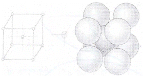
- 면심입방격자
- 조밀육방격자
- 저심면방격자
- 체심입방격자
(정답률: 58%)
43. Mg의 비중과 용융점(℃)은 약 얼마인가?
- 0.8, 350℃
- 1.2, 550℃
- 1.74, 650℃
- 2.7, 780℃
(정답률: 71%)
44. 다음 중 FeC 평형상태도에서 가장 낮은 온도에서 일어나는 반응은?
- 공석반응
- 공정반응
- 포석반응
- 포정반응
(정답률: 57%)
45. 금속의 공통적 특성으로 틀린 것은?
- 열과 전기의 양도체이다.
- 금속 고유의 광택을 갖는다.
- 이온화하면 음(-)이온이 된다.
- 소성변형성이 있어 가공하기 쉽다.
(정답률: 68%)
46. 담금질한 강을 뜨임 열처리하는 이유는?
- 강도를 증가시키기 위하여
- 경도를 증가시키기 위하여
- 취성을 증가시키기 위하여
- 연성을 증가시키기 위하여
(정답률: 55%)
47. 다음 중 소결 탄화물 공구강이 아닌 것은?
- 듀콜(Duecole)강
- 미디아(Midia)
- 카블로이(Carboloy)
- 텅갈로이(Tungalloy)
(정답률: 54%)
48. 미세한 결정립을 가지고 있으며, 어느 응력하에서 파단에 이르기까지 수백 % 이상의 연신율을 나타내는 합금은?
- 제진합금
- 초소성합금
- 미경질합금
- 형상기억합금
(정답률: 55%)
49. 합금 공구강 중 게이지용강이 갖추어야 할 조건으로 틀린 것은?
- 경도는 HRC 45 이하를 가져야 한다.
- 팽창계수가 보통강보다 작아야 한다.
- 담금질에 의한 변형 및 균열이 없어야 한다.
- 시간이 지남에 따라 치수의 변화가 없어야 한다.
(정답률: 68%)
50. 상온에서 방치된 황동 가공재나, 저온 풀림 경화로 얻은 스프링재가 시간이 지남에 따라 경도 등 여러 가지 성질이 악화되는 현상은?
- 자연 균열
- 경년 변화
- 탈아연 부식
- 고온 탈아연
(정답률: 60%)
3과목: 기계제도
51. 그림과 같이 기점 기호를 기준으로 하여 연속된 치수선으로 치수를 기입하는 방법은?
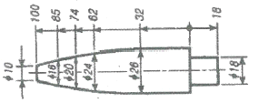
- 직렬 치수 기입법
- 병렬 치수 기입법
- 좌표 치수 기입법
- 누진 치수 기입법
(정답률: 61%)
52. 아주 굵은 실선의 용도로 가장 적합한 것은?
- 특수 가공하는 부분의 범위를 나타내는데 사용
- 얇은 부분의 단면도시를 명시하는데 사용
- 도시된 단면의 앞쪽을 표현하는데 사용
- 이동한계의 위치를 표시하는데 사용
(정답률: 38%)
53. 나사의 표시방법에 대한 설명으로 옳은 것은?
- 수나사의 골지름은 가는 실선으로 표시한다.
- 수나사의 바깥지름은 가는 실선으로 표시한다.
- 암나사의 골지름은 아주 굵은 실선으로 표시한다.
- 완전 나사부와 불완전 나사부의 경계선은 가는 실선으로 표시한다.
(정답률: 48%)
54. 다음 입체도의 화살표 방향을 정면으로 한다면 좌측면도로 적합한 투상도는?
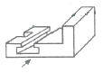
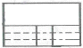
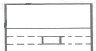
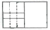
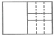
(정답률: 73%)
55. 판을 접어서 만든 물체를 펼친 모양으로 표시할 필요가 있는 경우 그리는 도면을 무엇이라 하는가?
- 투상도
- 개략도
- 입체도
- 전개도
(정답률: 82%)
56. 배관도서기호에서 유량계를 나타내는 기호는?
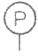
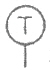
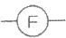
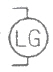
(정답률: 65%)
57. 그림과 같은 입체도의 정면도로 적합한 것은?
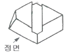
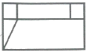
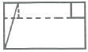
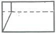
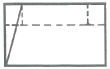
(정답률: 71%)
58. 재료 기호 중 SPHC의 명칭은?
- 배관용 탄소 강관
- 열간 압연 연강판 및 강대
- 용접구조용 압연 강재
- 냉간 압연 강판 및 강대
(정답률: 47%)
59. 용접 보조기호 중 "제거 가능한 이면 관계사용" 기호는?
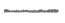
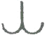
(정답률: 79%)
60. 기계제도에서 사용하는 척도에 대한 설명으로 틀린 것은?
- 척도의 표시방법에는 현척, 배척, 축척이 있다.
- 도면에 사용한 척도는 일반적으로 표제란에 기입한다.
- 한 장의 도면에 서로 다른 척도를 사용할 필요가 있는 경우에는 해당되는 척도를 모두 표제란에 기입한다.
- 척도는 대상물과 도면의 크기로 정해진다.
(정답률: 66%)